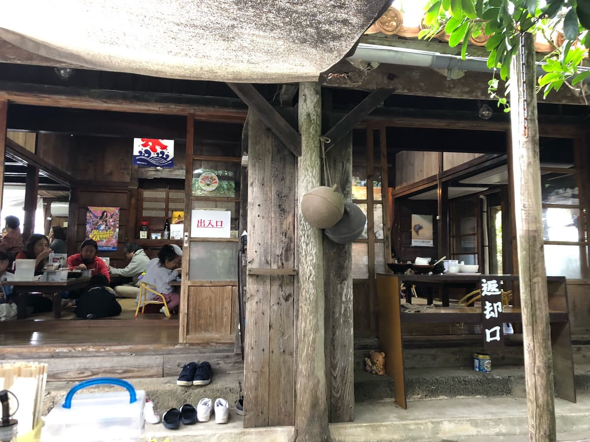
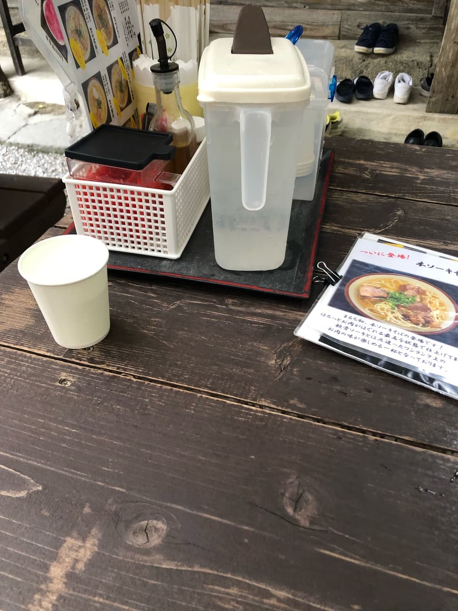
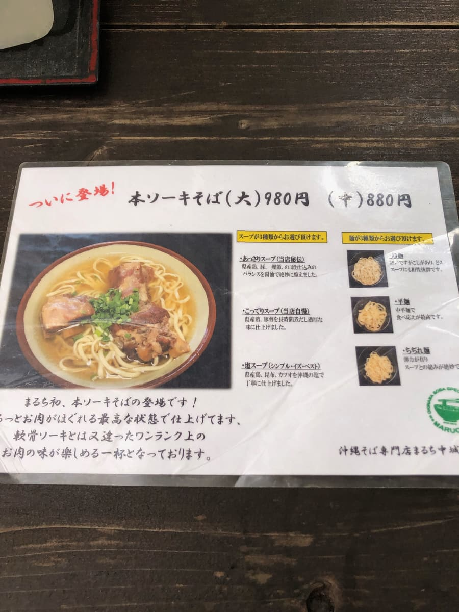
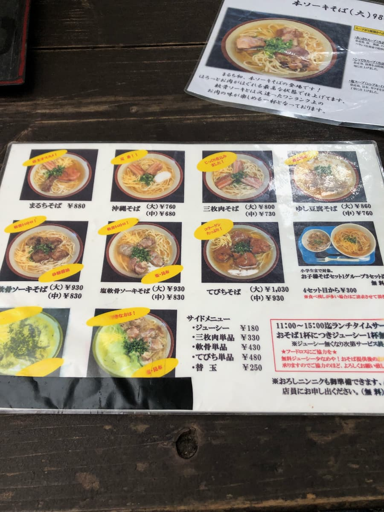
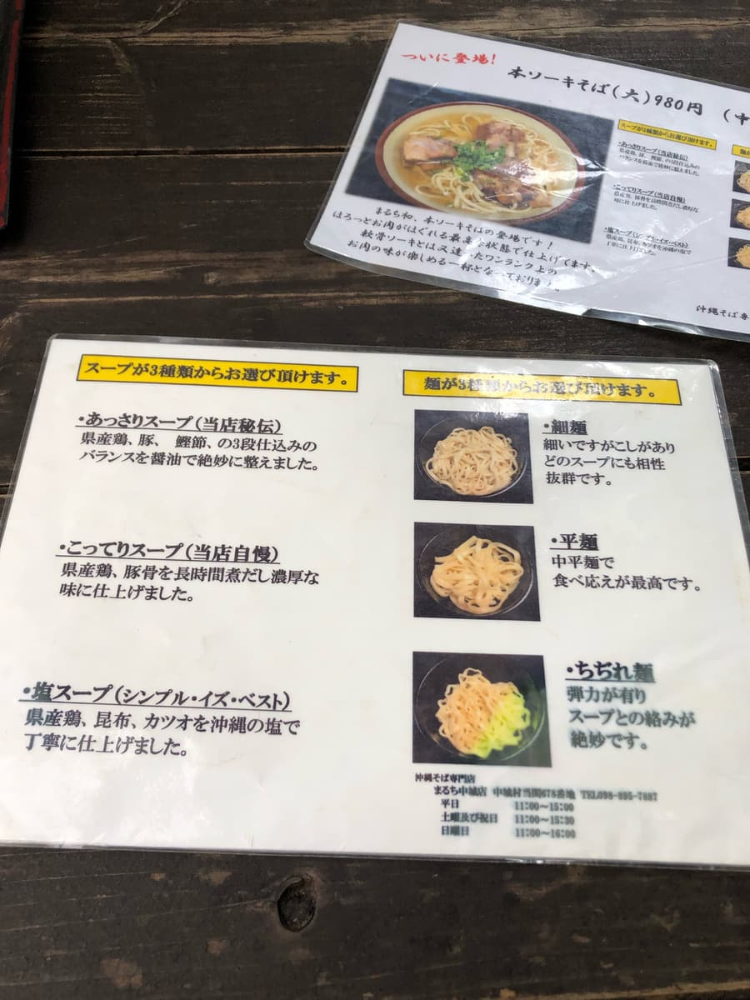
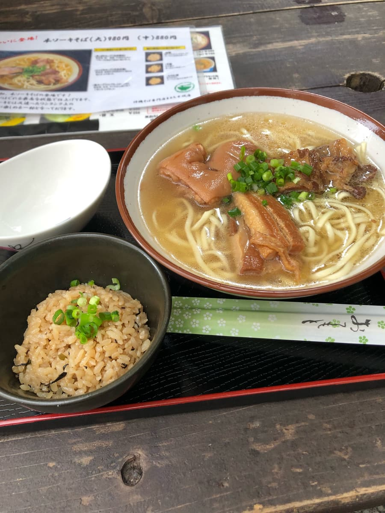
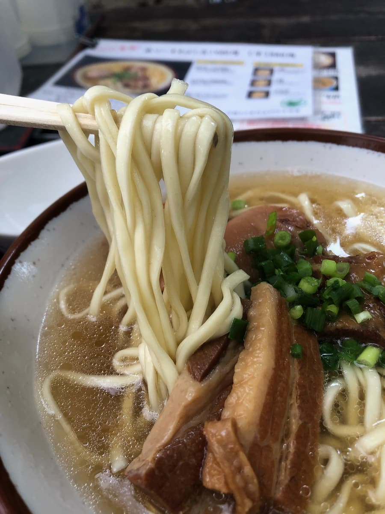

2024年1月吃的😁 因為第13屆集章活動已經全制霸，所以接下來也會繼續努力朝著本島內沖繩麵店全破關邁進👍
這家店，要從中城村的國道329號往海側的田園區開，位在鄉下的地方，但靠著Google地圖抵達後嚇了一跳(°°)！
停了超多車，可以知道客人很多。說這種鄉下地方有點失禮，但真是超人氣店。


古民家裡客人坐得滿滿的。不過戶外也設置了桌位，聽說戶外桌位不用等就能馬上點餐，所以決定在戶外吃😁 雖然有點冷(^0^;)




決定點和店名相同的「丸奇麵」。因為湯頭、麵條都可以選，所以向店員確認推薦。據說「清爽湯頭」「細麵」出餐最多，所以就點了那個。

丸奇麵來了😁 品嚐湯頭，說明寫的是雞、豬、柴魚的混合高湯，但是稍微偏豬骨底的湯頭呢。

接著吃麵。直麵的細麵感覺偏軟。配料的豬腳、三層肉、軟骨排骨份量十足。軟骨排骨和三層肉有點乾柴，有筋感（口感偏韌）。
評分（9分/15分）：算是普通的感覺，但觀光客很多，是人氣店。想體驗沖繩古民家的人，要不要來一次看看呢😆
麵：★★★☆☆（3）
湯頭：★★★☆☆（3）
配料：★★★☆☆（3）